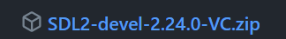
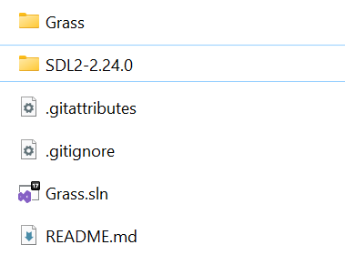

Install Grass
WARNING!
Currently, the only OS we provide support for Grass are Windows, support for both the engine and games you build.
First, have Git and Visual Studio installed. You must be sure that you have checked "Desktop Development for C++", otherwise you can't work with C++ on Visual Studio.
We will also download SDL2 for engine to work, but we will show how under the way :)
Installation:
First clone the GitHub source code of Grass engine by running this command:
git clone https://github.com/nikeedev/grass.git
Inside Grass folder, the view should be something similar to this:

SDL2
Now let's install SDL2, the library i use to make the engine work.
Head over to https://github.com/libsdl-org/SDL/releases/latest where you can download the latest (not development) version of SDL2.
Scroll down till you find the one we need that should have text like this:

We need that specific type of SDL2 because it is build to work with and on Visual Studio. Unzip SDL2-devel-2.x.x-VC.zip and inside it you will find another folder with name: SDL2-2.x.x. Take this folder and paste it in the head Grass engine folder.
Your new folder view should look something like this:

Nice! Now the Grass engine is installed and setup'ed.
Let's go next and run it!